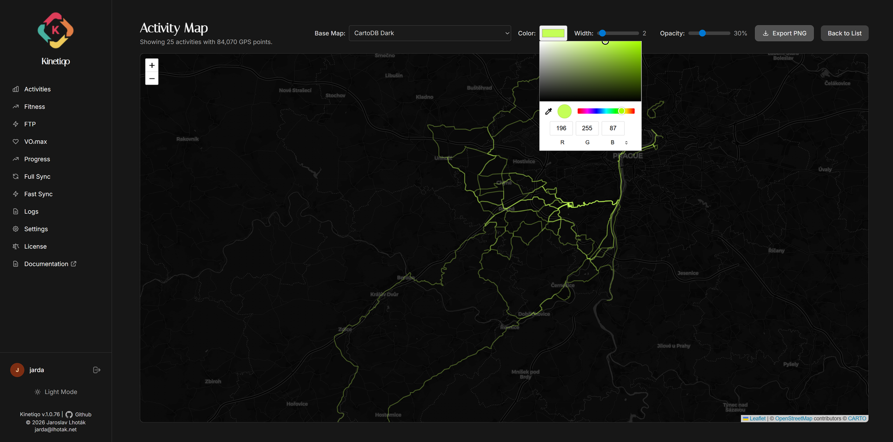

Plot thousands of GPS points simultaneously with HTML5 Canvas Leaflet rendering, 7 map tile providers, and custom route styling.
Standard DOM map markers struggle with thousands of GPS coordinates. Kinetiqo uses Leaflet's HTML5 Canvas renderer to plot complex multi-stage GPS routes smoothly without browser lag.

Kinetiqo gives you full aesthetic control over how your maps and route polylines are rendered:
Switch seamlessly between OpenStreetMap, Mapy.cz (tourist/outdoor), Thunderforest (Outdoors, OpenCycleMap), MapTiler (Satellite, Vector), Geoapify, CARTO (Positron, Dark Matter), and Esri (World Imagery & Topo).
Customize polyline stroke colors (Strava Ember, Neon Cyan, Emerald, Electric Purple) and line weight thickness for maximum contrast over satellite or topographic terrain.
Adjust polyline transparency from 10% to 100%. Lowering opacity lets underlying road names and topo contour lines show through overlapping routes.
Apply real-time map tone filters (Sepia, Dark Space, High Contrast, Hue Shift) to match your dashboard theme or create dramatic map screenshots.